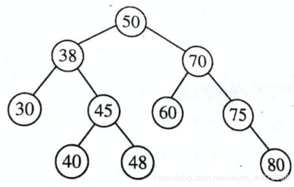
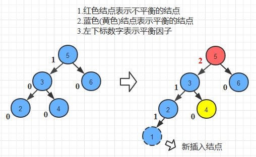
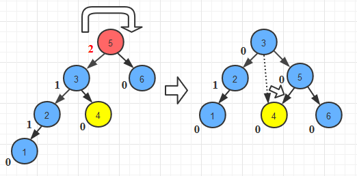
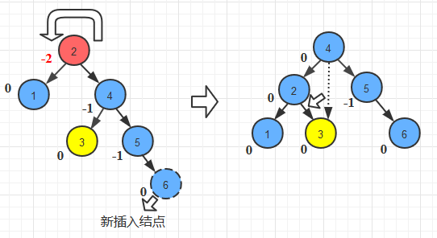
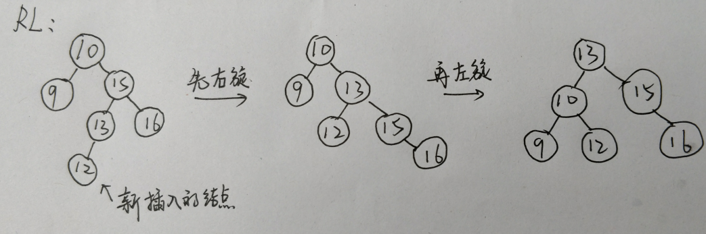

1. 二叉排序树
1.1 定义
二叉排序树（Binary Sort Tree）又称二叉查找树（Binary search Tree），简称BST，它有以下性质：
- 若一棵二叉排序树的左子树不为空，则左子树所有结点的值都小于这棵二叉排序树的根节点的值。
- 若一棵二叉排序树的右子树不为空，则右子树所有结点的值都大于这棵二叉排序树的根节点的值。
- 这棵二叉排序树的左右子树也分别都是二叉排序树。
1.2 图示
以下就是一棵二叉排序树：

1.3 其他
对一棵二叉排序树进行中序遍历（左子树 -> 根节点 -> 右子树），就能得到一个有序序列，比如对上图的二叉排序树进行中序遍历就得到（30, 38, 40, 45, 48, 50, 60, 70, 75, 80）。
2. 平衡二叉树
2.1 定义
平衡二叉树（Balanced Binary Tree），又称AVL树，它有以下性质：
- 它的左右子树都是平衡二叉树。
- 它的左右子树的深度之差的绝对值不超过。
- 将二叉树节点上的平衡因子（Balance Factor）定义为该节点的左子树深度减去右子树深度。所以一颗平衡二叉树上所有结点的平衡因子只能为-1、0或1。
2.2 图示
非平衡二叉树：
平衡二叉树：
2.3 插入
当插入新节点时，可能会使这棵平衡二叉树失去平衡，这时就要调整最小的那棵失去平衡的子树，进行平衡化操作使整棵树重新平衡。
平衡化操作分为：
- 单次右旋
- 单次左旋
- 先左旋后右旋
- 先右旋后左旋
2.3.1 单次右旋
如下图：

发生在LL的时候，即在一棵平衡二叉树的左子树的根节点的左叶子结点新插入结点，这样破坏了树的平衡，需要进行单次右旋使树重新平衡。
单次右旋如何操作直接看图：

2.3.2 单次左旋
发生在RR的时候，即在一棵平衡二叉树的右子树的根节点的右叶子结点新插入结点，这样破坏了树的平衡，需要进行单次左旋使树重新平衡。
单次左旋和单次右旋的思想是一样的，直接看图：

2.3.3 先左旋后右旋
发生在LR的时候，即在一棵平衡二叉树的左子树的根节点的右叶子结点新插入结点，这样破坏了树的平衡，需要进行先左旋后右旋使树重新平衡。
图略，思想和先右旋后左旋一样。
2.3.4 先右旋后左旋
发生在RL的时候，即在一棵平衡二叉树的右子树的根节点的左叶子结点新插入结点，这样破坏了树的平衡，需要进行先右旋后左旋使树重新平衡。
直接看图：

2.4 删除
要了解一棵平衡二叉树如何删除一个结点，首先我们要了解二叉排序树如何删除一个结点。
对于二叉排序树，假设要删除结点A，有三种情况：
- 结点A是叶子结点。
- 结点A的左子树或右子树为空。
- 结点A的左子树和右子树都不为空。
分别有三种对策：
- 对于情况1，直接删除结点A即可。
- 对于情况2，结点A的父结点绕过结点A，指向结点A的右子树（如果结点A的左子树为空），或指向结点A的左子树（如果结点A的右子树为空），然后删除结点A即可。
- 对于情况3，找到结点A的前驱（左子树中值最大的结点）或者结点A的后继（右子树中值最小的结点），并把前驱或者后继的值复制到结点A中，最后将前驱或者后继删除。
平衡二叉树的删除策略和二叉排序树一样，不过最后可能会失去平衡，需要对树进行平衡化操作。
（小声bb，网上很多人写的博客真不怎样，用自以为很幽默风趣的话来描述一个知识点，却模棱两可描述不清楚，而且那些“幽默风趣”的话其实很无聊，比如“举个栗子”等等，呕）